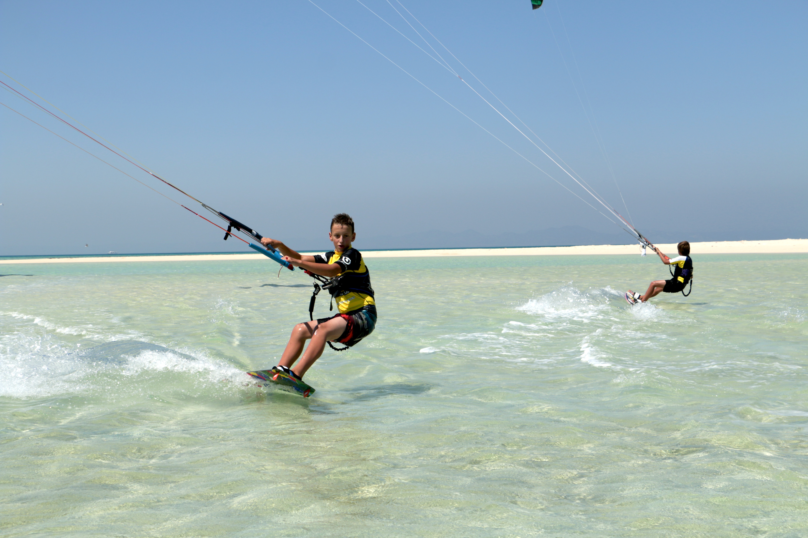

НОВОСТИ
-
29МАЙ 2015Десткие кайт сафари! Дорогие мамы и папы! Мы приглашаем вас и ваших детишек на увлекательное детско-семейное кайт сафари по островам Красного моря! Подарите своему ребенку незабываемую поездку, полную новых впечатлений, знакомств, позитива и спорта! Лучшие даты этого лета 15-22... подробнее
-
25МАЙ 2015Обучение вейкбордингу 2015 Друзья кайтеры и вейкбордисты кайтшкола KITEPITER возвращается в родной город и мы снова будем учить не только кайтсерфингу, но и вейкбордингу на лебедке KingWinch форт Константин . Наша вейк школа работает уже не один сезон. Мы точно знаем как научить вас новому... подробнее
-
25МАЙ 2015Кайт-споты Санкт-Петербурга Первый раз я написал короткий путеводитель по кайт спотам Питера давно, давно 10 лет назад. Это была очень нужная и актуальная статья, но с тех пор все поменялось и очень сильно! Кто хочет поржать может почитать оригинал, ниже представлю свое виденье современной... подробнее
-
25МАЙ 2015Это надо знать начинающему питерскому кайтеру. Первый раз я написал короткий путеводитель по кайт спотам Питера давно, давно 10 лет назад. Это была очень нужная и актуальная статья, но с тех пор все поменялось и очень сильно! Кто хочет поржать может почитать оригинал, ниже представлю свое виденье современной... подробнее
-
19 май 2015
ДЕТСКИЙ КАЙТ-ВЕЙК ЛАГЕРЬ 2015 В САНКТ-ПЕТЕРБУРГЕ!
Уже пятый год подряд наша кайт-школа KITEPITER проводит детские кайт-вейк лагеря! Мероприятие, ставшее доброй летней традицией! Мы с удовольствием тренируем детей и делимся с ними нашими знаниями, а в группе единомышленников прогресс в экстремальных видах... Узнать больше -
18 май 2015
ОБУЧЕНИЕ КАЙТУ В САНКТ-ПЕТЕРБУРГЕ
Наша кайтшкола KITEPITER вернулась в Санкт-Петербург, чтобы начать обучение в родном городе. С 16 мая мы открываем летний сезон обучение кайтбордингу Основные места для обучения: Сестрорецкий Курорт. Большая Ижора и Кронштадт. Наша школа передвигается в... Узнать больше -
11 май 2015
KINGWINCH SEASON 2015
16-го мая на территории форта «Константин» пройдет самое колоссальное мероприятие за всю историю российского вейк-комьюнити: «Kingwinch Open Season 2015» «Kingwinch» - это Первый в России двухуровневый джиб-парк, обладатель престижной премии Russian Wake Awards 2014 в... Узнать больше -
18 май 2015
ВИДЕО ОТЧЕТ С «РУССКОЙ ВОЛНЫ 2015»
На телеканале РБК вышел видео отчет с «Русской волны 2015" Фестиваль музыки и спорта проходил Хургаде в середине марта. Наша кайтшкола Kitep выступала как организатор спортивной кайтовой составляющей, являлась спонсором соревнований и занималась.. Узнать больше